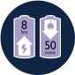

1 hora de carga = 50 minutos
1 hora de carga = 50 minutos
de uso contínuo!
Indicador de
nível de bateria
A luz indicadora de seu
Bodygroom fica verde
quando a bateria está cheia
e pisca na cor laranja
quando restam apenas 10
minutos de uso.
Leve seu Bodygroom
com você!
O Aparador de Pelos BG2024 possui um
suporte para armazenamento e
carregamento que cabe em qualquer lugar!
Você pode carregá-lo quando quiser ou
levá-lo com você durante suas viagens.